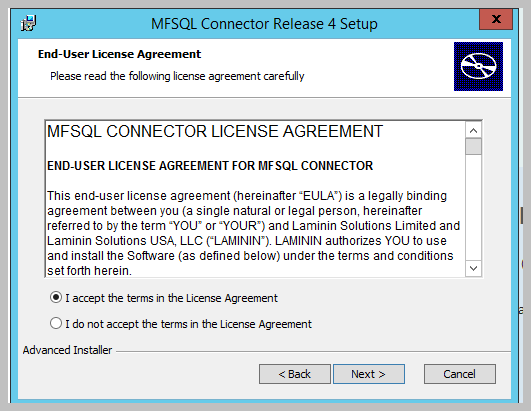
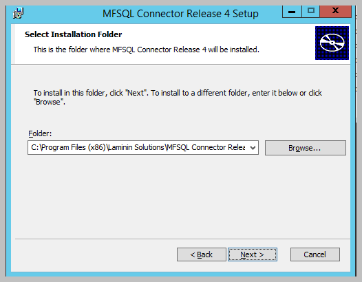
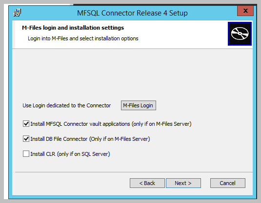
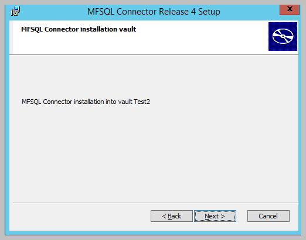
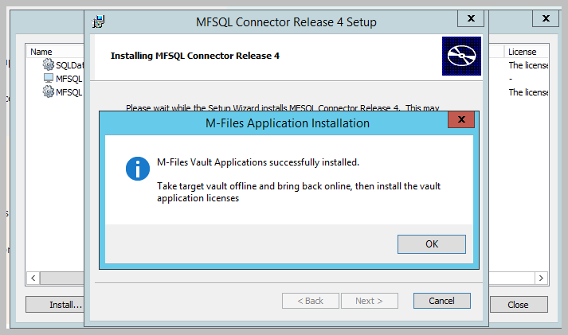
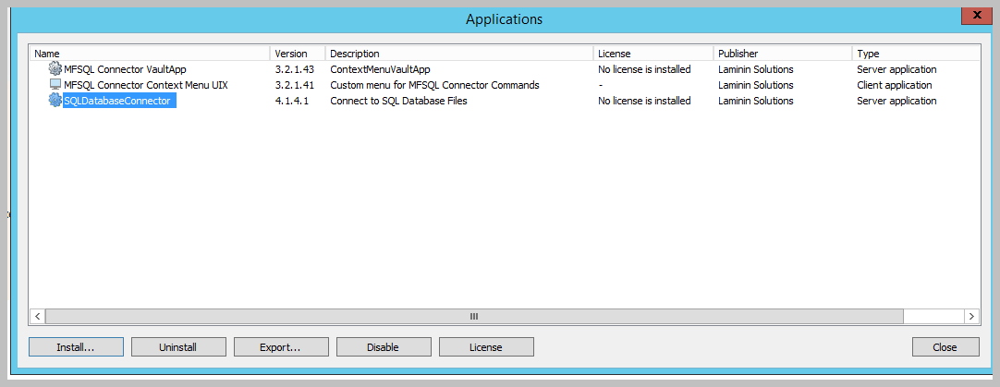
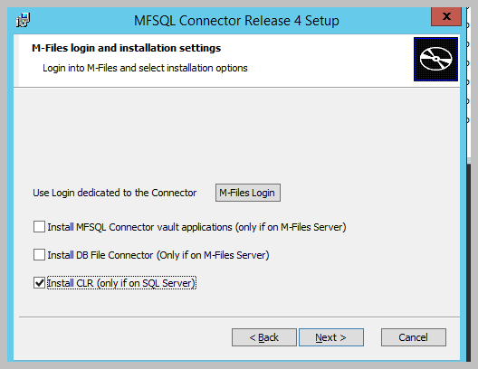
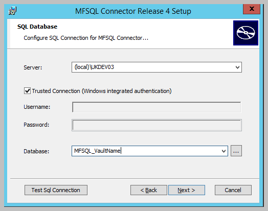

Standard New Installation¶
This page relates to Release 4.3.9.48 and later with M-Files, and SQL on differents servers in the same domain.
Watch the video
Before executing the installation package¶
Confirm M-Files version 12.0.6400.0 or higher is installed
Confirm SQL Server is installed with mixed authentication mode enabled
Ensure M-Files Desktop Client is installed on the M-Files Server and SQL server
Copy Sample Vault to create a new test vault to prototype with the Connector ; or use an existing vault
Install the package with windows administrator credentials.
Connect to the M-Files server with system administration credentials
Setup a dedicated M-Files User for the vault. It is recommended to use M-Files authentication. However specific windows user can also be used. Set user with vault admin rights. We recommend a user name that is easily identifiable as a Connector User such as MFSQLConnect
Run Installation Package on the M-Files Server¶

Confirm the license agreement

Select installation folder. We recommend to use the default. Selecting a different folder will require additional steps.
The installation folder will contain the installation files for the specific to the Vault and Database being implemented. Accept default, or browse to desired folder

Login into M-Files to connect the M-Files Vault and the MFSQL Database. The credentials used as login will be used by MFSQL Connector to access the vault for all future operations. The credentials can be changed at any time using SSMS or by rerunning the installation package.


Select either both, or one of the options to install the vault applications. These options must ONLY be selected when the installer is executed while on the M-Files Server.

Selecting MFSQL Connector vault applications will install
Content package to add objects related and required by the connector.
Vault application: MFSQL Connector VaultApp
MFSQL Connector Context Menu UIX
Selecting the DB File Connector will install
SQL Database Connector application
All these applications can be installed manually. See section for manual installation.
The DB File Connector is only required if the functionality is needed to connect to Blobs (database files) in a third party database without transferring the files to M-Files. Installing this connector will require M-Files IML core to be licensed by your M-Files license.
Verify that the installation is connected to the correct Vault

Login into the SQL server with sysadmin credentials. The server name must include the SQL Server \ Instance. Add the server port if a non standard port are used.
Type in the new name of the target MFSQL Connector database. We recommend using MFSQL_ as the prefix and the name of the vault as the suffix.

The installation will proceed through a number of steps On completion of the installation a message box is shown to remind you to take vault offline and bring back online before proceeding.
Finish the installation.

After taking the vault offline and back online will complete the installation of the vault applications
Validate the vault applications

Get the vault installation error log at
C:Users[windowsuser]AppDataLocalMFSQL Vault InstallErrorLog.txt
Configure M-Files ServerAfter installing the M-Files Application packages for the MFSQL Connector, proceed with setting up the Connector in M-Files Take vault off line and bring back online
Access the Applications window using M-Files Admin
See section on installing the licenses for further detail on licensing the applications.
Access the application configuration using M-Files Admin
Run Installation Package on the SQL Server¶
The first few steps is a repeat of the M-Files Server installation.
Login into M-Files to connect the M-Files Vault and the MFSQL Database. The credentials used during login will be used by MFSQL Connector to access the vault for all future operations. Note the M-Files server is likely to NOT be localhost.
Select the installation type
Checkbox: Install CLR. This selection will create the database, install the Connector in SQL and install the CLR Assemblies.
Only check this box if the installation routine is being run on the SQL Server.

Use the SQL Database window to login into the SQL Server. Use credentials with sysadmin rights.
Type in the name of the database if it is a new installation. The database will automatically be created.
Use the … dots to show the existing databases on the server. Select an existing database when the installation is re-run for the database.

Continue with the installation until finished.
Log into SSMS from a workstation and access the MFSQL Connector database.
Use the example scripts to guide you through the first steps to get going with the Connector. The sample scripts are available at
C:Program Files (x86)Laminin Solutions\MFSQL Connector Release 4\[Database Name]Example Scripts